Hogarea Málaga · activo desde el 7 oct Ver en Meta ↗
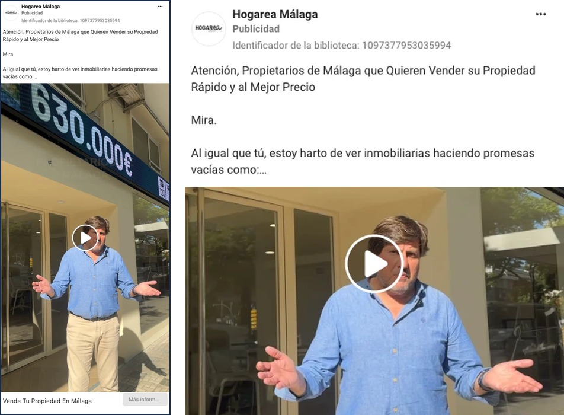
2
Habla a un único propietario
El que quiere vender en tu zona. Veinte mil personas en un solo anuncio, y cada uno que entra se suma a tu base. Barcelona primero, Málaga después, los dos activos hoy.
Solo tu código postaltu cara, tu calle · el guion te lo damos nosotros
1Vende en < 6 meses
2Está en tu zona
3Quiere agencia
3
Filtrado antes de llegar a tu agenda
Tres preguntas. El que no cumple las tres, no te llega.
No pagas por curiosos
CRM · 3 de octubre 19:47 se registra · 19:48 le escribe Lucas
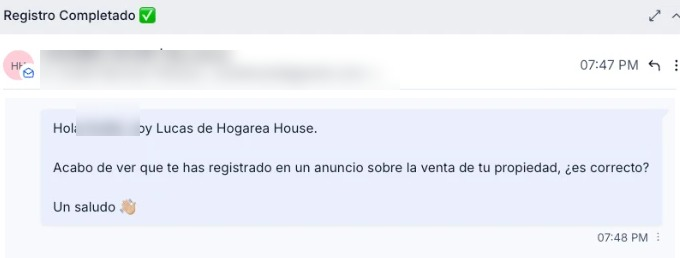
4
Construido para responder en un minuto
De día y de noche. Sale solo, con tu nombre, mientras aún tiene el móvil en la mano.
19:47 → 19:48antes que cualquier otra agencia
Plataforma · 3.2.4 yo, haciendo la llamada
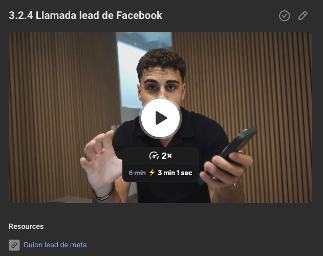
WhatsApp · 4 de octubre él contesta
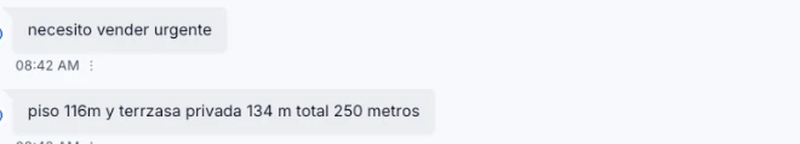
5
Proteger la oportunidad
Un propietario que levanta la mano se enfría en minutos. La llamada la haces tú: te enseño cómo, grabada y con el guion.
Tu equipo llama como yoy revisamos sus llamadas una a una
Calendario de Lucas · 8 de octubre 5 días después del anuncio
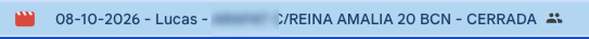
6
Del anuncio a su salón
Cinco días. Sin una sola fuga entre una etapa y la siguiente.
Cita el 8 de octubre
El SelloLa cita · estructurada para convertirse en exclusiva
Plataforma mi visita, grabada entera · 1 h 09
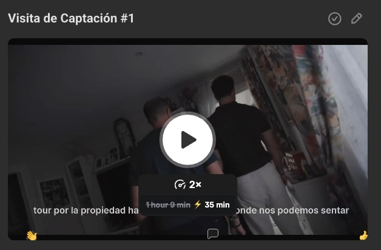
Atrio · nuestra propia inmobiliaria Mallorca
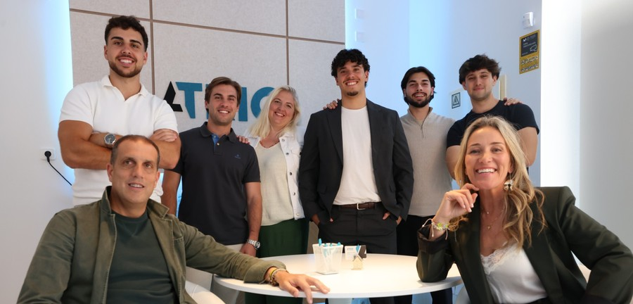
Abril honorarios del mes
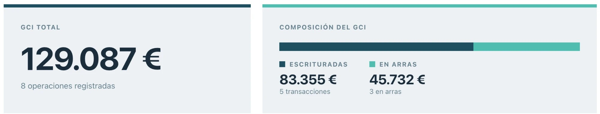
7
Cada cita, preparada
Mi visita de captación, de principio a fin. Grabada en nuestra propia inmobiliaria: el Circuito Cerrado lo probamos primero en casa.
Diseñado por dueños de inmobiliaria para dueños de inmobiliariaAtrio, nuestra inmobiliaria: 8 exclusivas al mes · 129.087 € de honorarios en abril (83.355 escriturados + 45.732 en arras)
Comunidad Claudia sube su cita · se la corregimos
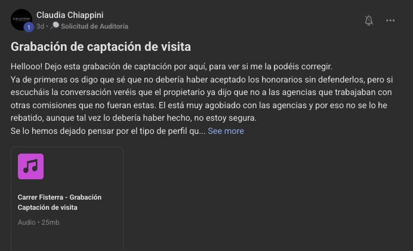
Chiappini · semana 2 de 800.000 a 600.000
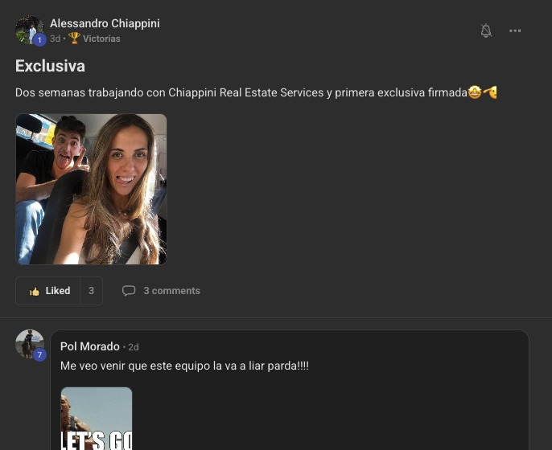
Selenhome · semana 1 150.000 por debajo del precio inicial
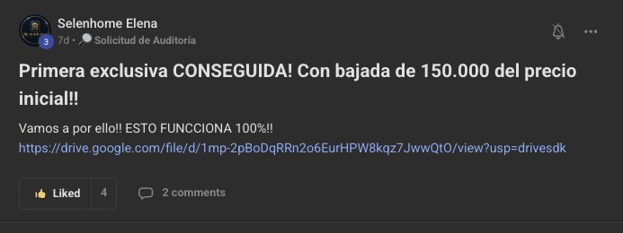
8
Cada visita, estructurada para cobrar lo que vale
Graban con el móvil, la suben, y les decimos dónde se cae la exclusiva.
Exclusivas al precio del mercadono al que pide el propietario
CRM captación conseguida
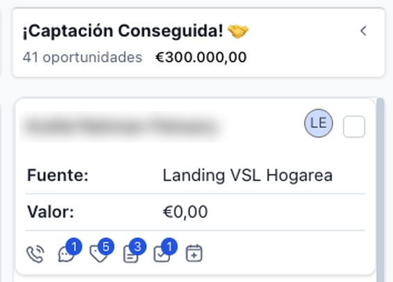
9
El anillo se cierra
Alrededor de lo más valioso que tiene una inmobiliaria: el propietario. No una exclusiva: una que se vende.
Exclusiva en precio
El CalibreLa medida · probado contra la única métrica que no miente
Panel · Chiappini · octubre 2026 3 personas · 4 semanas dentro
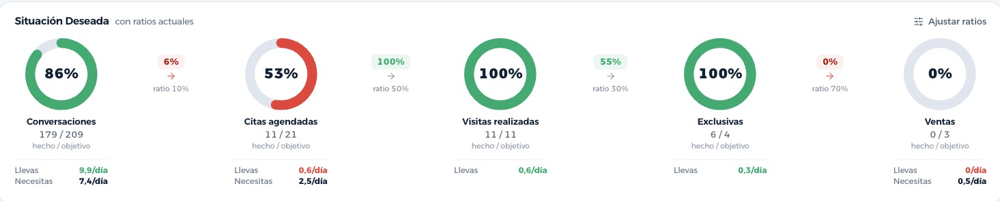
10
Conversaciones179
Citas · de 2111
Visitas11
Exclusivas · de 46
Ventas · mes 10
Medido semana a semanasobre tus números reales · el rojo también
La ReservaTu base de contactos · empieza por lo que ya tienes
Grabar los anunciosSemana 1 · una tarde
Subir tu listaDía 1 · 30 min
Métricas con tu equipoCada día · 2 min
1 a 1 con tu consultorCada semana · 1 h
Formación, tú y ellos2 semanas · 1 h al día
Llamar, ir, grabarTu trabajo de siempre
11
Dónde se rompe · lo hemos vistoNadie llama en una hora → a las 24 h está con otra agencia. Se firma al precio que pide → cuatro meses gratis. El mes 1 es de prueba → se mide cuánto cuesta una cita en tu zona.
Se construye juntossi haces tu parte, funciona · si no, no
El LaboratorioClaudia · Costa Brava · del 6 al 26 de octubre
6 de octubre · 17:32 paga y entra
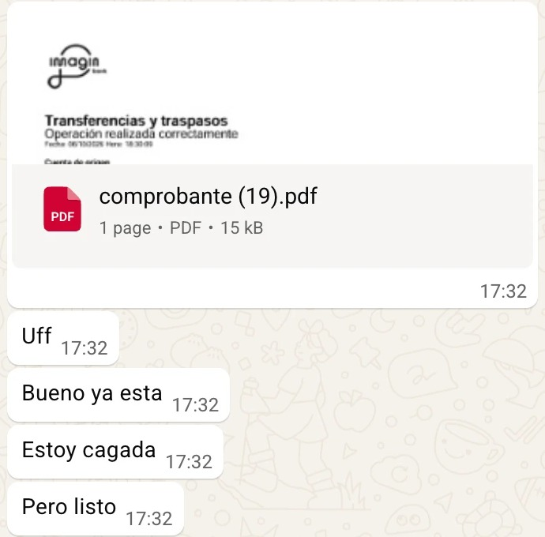
8 de octubre se presenta en la comunidad
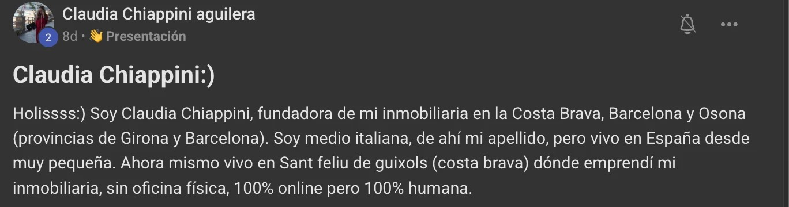
9 de octubre · 09:07 sube su base y el sistema llama
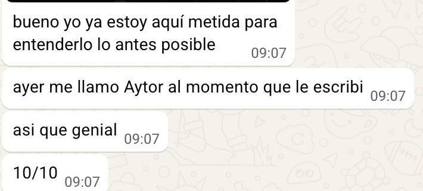
20 de octubre Giacomo, su hermano, semana 2
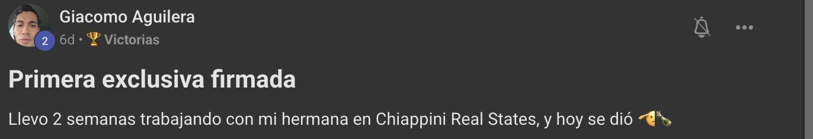
24 de octubre Trustpilot, sin pedirla · una de 88
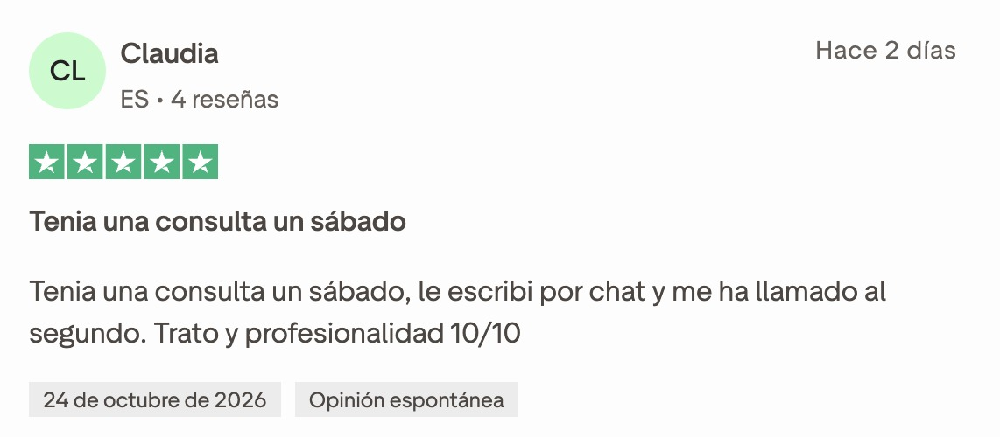
26 de octubre su panel entero, hoy · los tres con sus números
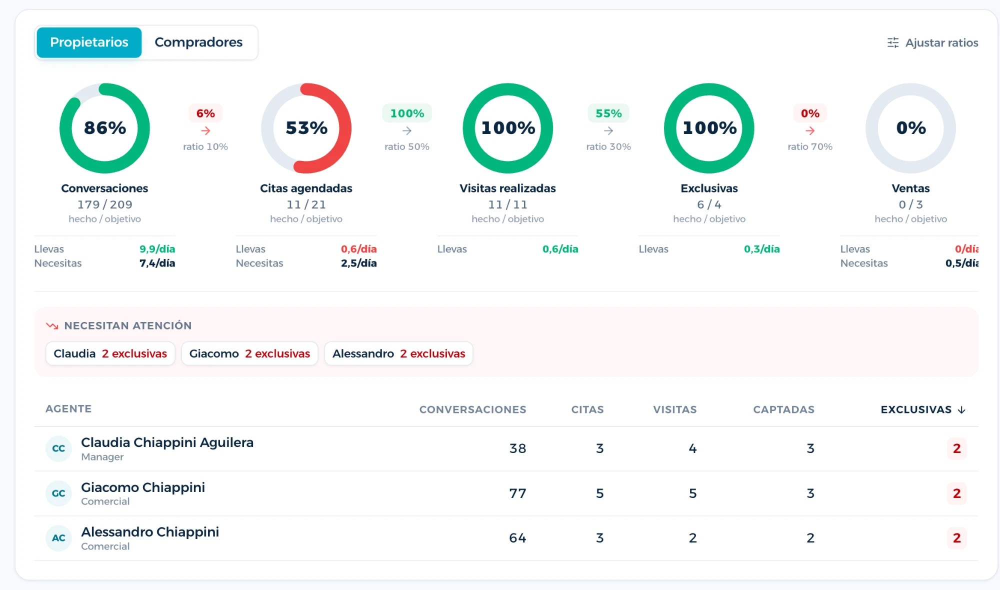
12
De «estoy cagada» a 6 exclusivas
Sola dos años, sin oficina, 80.000 € este año, tres captando «a los que no sé enseñar», organización cero. Había mandado a la mierda a un montón de consultores.
20 días · 6 exclusivas · empezó sola2 de Claudia, 2 de Giacomo, 2 de Alessandro · a 8.000 € de media, 48.000 € de honorarios en cartera · su año entero fueron 80.000
La Nueva GeneraciónDel pueblo más pequeño a la oficina más grande · con nombre, búscalas
JJS HomesMadrid · 9 personas · 6 captadores40.000 → 80.000 € / mes36 ventas a mitad de año: las de todo el año anterior
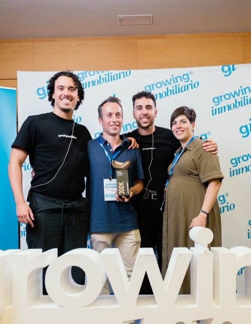
HogareaBarcelona y Málaga · premio 300K70.000 → 140.000 € / mes14-17 exclusivas al mes
Nova · PaiportaValencia · 30 años en el sector · padre e hijo40.000 → 62.000 € / mesdel 26 % al 40 % de beneficio · antes, solo referidos
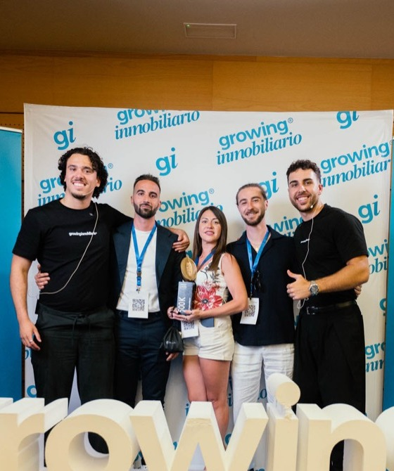
KyH Grand KapitalGirona · Kevin y Héctor · premio 500K10.000 → 69.888 € / mes38.018 € de beneficio en marzo · 54 % de rentabilidad
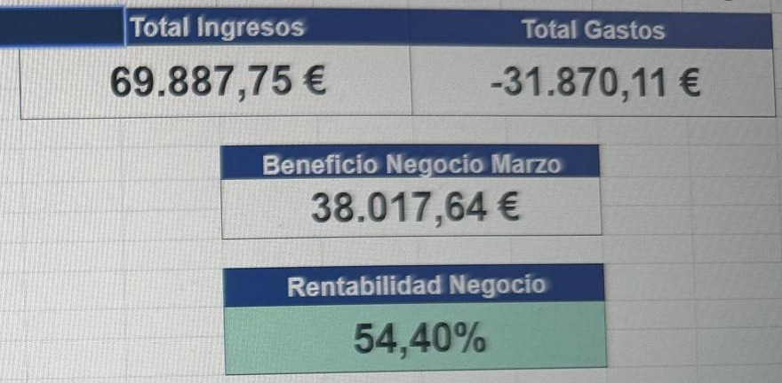
RE/MAX AcasaPontevedra · Claudio Santalices13.000 → 22.000 € / mesRE/MAX, con el Circuito Cerrado dentro
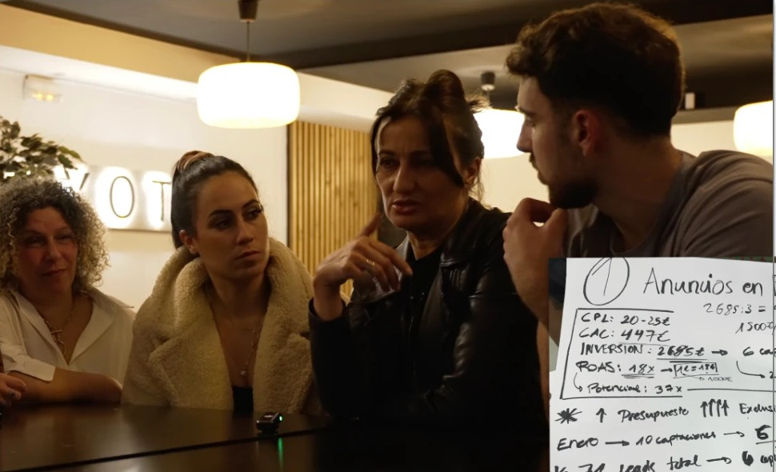
Puerto InmobiliariaEl Puerto de Santa María · Cádiz · 5 personas25.000 → 45-50.000 € / mes7 exclusivas al mes
Costa Blanca StoriesTorrevieja · 3 personasDe 0 a 4 exclusivas en septiembreentró el 1 de agosto
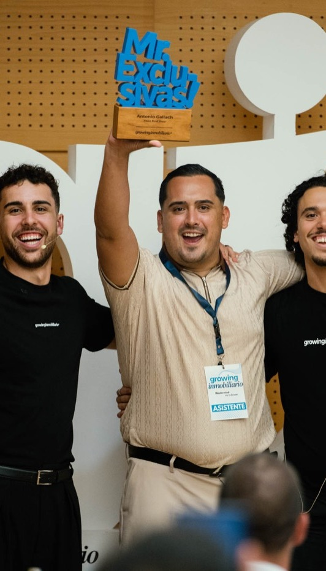
Antonio GallachMr. Exclusivas 2026 · [zona · equipo]400.000 → 800.000 € / añorécord: de 15 a 22 exclusivas en un mes
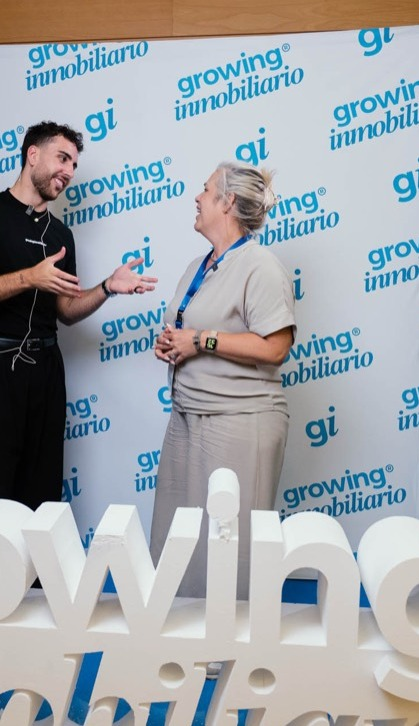
SandrineCosta Blanca · 25 años en el sector4 exclusivas al mes, sostenidasantes solo referidos · había probado varios programas
Y ahora, tú
No son excepciones. Son la nueva generación de inmobiliarias. Lo único que tienen en común es que se sentaron donde estás tú ahora.
¿Cuál se parece más a ti?
La DecisiónEsperar a que suene, o hacer que suene
Trustpilot 88 opiniones · 4,9
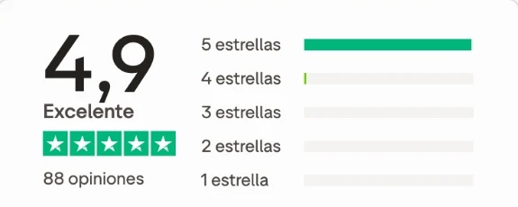
Con nombre y oficina de cada cliente. Búscalas.
Hay inmobiliarias que
Esperan a que suene el teléfono
Puertas. Llamadas. Horas. Cada mes, de cero.
Y hay inmobiliarias que
Hacen que suene
Miden lo que otros intuyen. No dependen de la suerte, ni de los referidos, ni de que el dueño esté encima de todo.
La decisión
Todos pasaron por esta misma reunión
Con el mismo miedo y la misma incertidumbre que tú ahora. Todos tuvieron que soltar la confianza. Claudia, el 6 de octubre: «estoy cagada, pero listo».
¿Quieres ser el siguiente?no es para todos · no es para quien quiere seguir haciendo lo mismo
Proyecto Motor de captación
Plano El Circuito Cerrado · se cierra alrededor del propietario